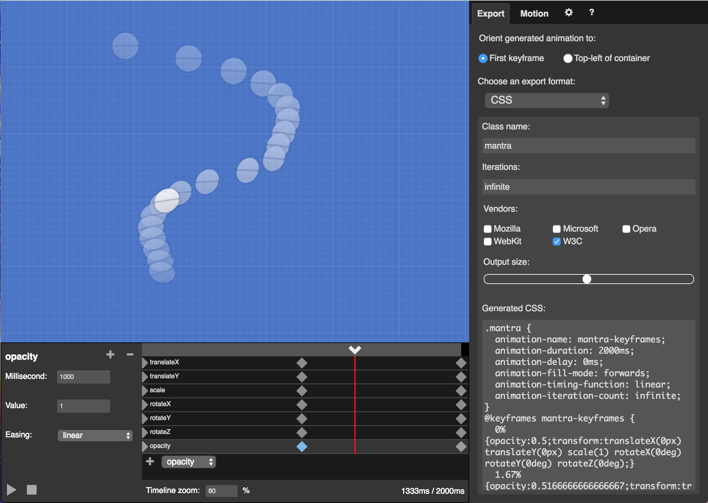
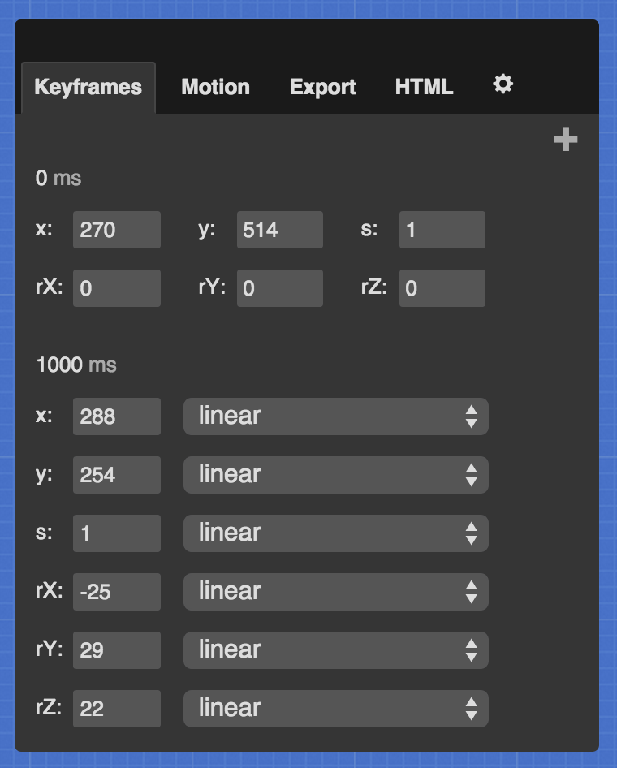
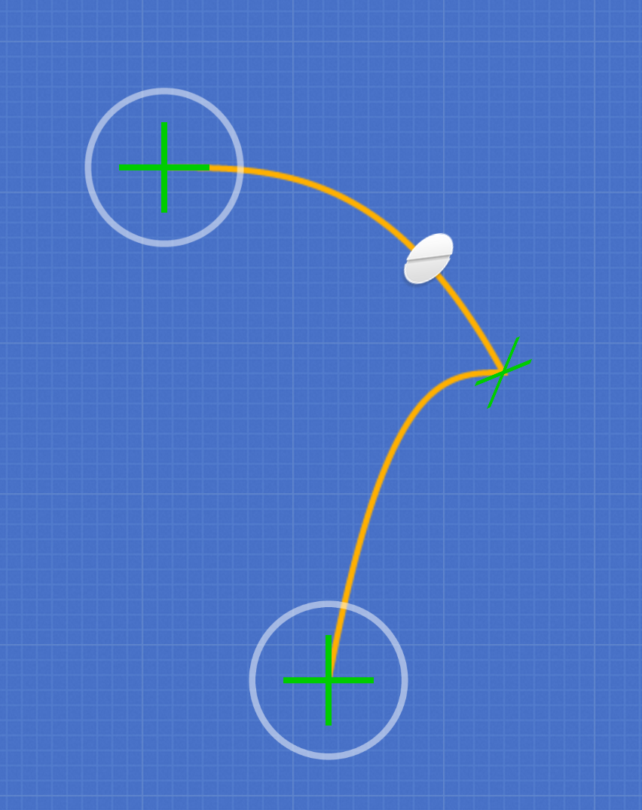
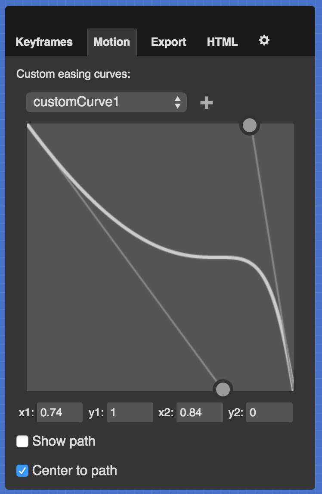
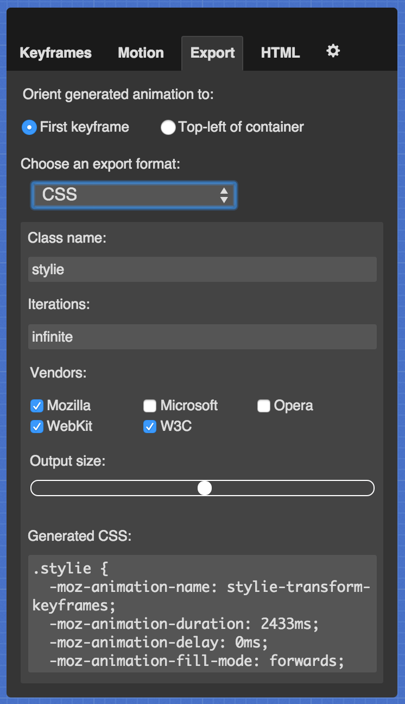
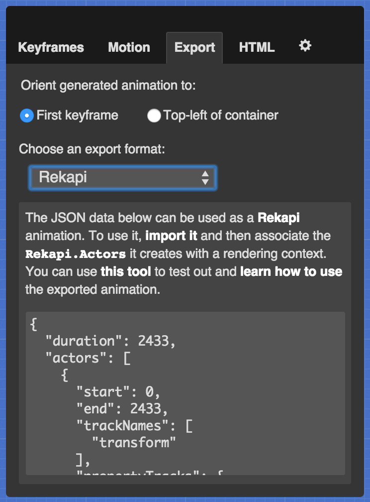
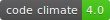

A fun web animation tool, powered by Rekapi
-
-
-
The JSON data below can be used as a Rekapi animation. To use it, import it and then associate the
Rekapi.Actorsit creates with a rendering context. You can use this tool to test out and learn how to use the exported animation.
Customize the HTML that you want to animate. The preview is updated as you type. The HTML you input here is not reflected in the CSS or JS tabs, it only affects the preview.

Web animation made easy!
Stylie is a fun tool for easily creating complex web animations. Quickly design your animation graphically, grab the generated code and go!
Watch this screencast for a tutorial.
If you like this tool, check out Mantra
Stylie is part of a larger, much more powerful tool called Mantra. In addition to Stylie's drag-and-drop tween editing, Mantra provides a timeline editing tool for tweaking animations at a more granular level. Since Stylie is built right in (press the T key in Mantra), you won't have to re-learn anything. It's a natural step if you want to take your animations to the next level!
Stylie predates Mantra and is still useful in isolation, which is why it exists here as an independent app as well as an embedded tool in Mantra. If you are just getting started with Stylie, it is recommended that you head over to Mantra and learn how to use that instead, as it has a more extensive feature roadmap than Stylie. Both tools are completely open source and free to use.
You can watch this quick screencast to learn how to use Stylie within Mantra and get even more out of both tools.
The Stylie Workflow
When you open the app, you will see a little ball moving from left to right. To change the beginning and ending positions of the animation, just click and drag the crosshairs. You can click the button in the lower-right to enter Rotation/Scale Mode and make rotation cubes appear over the crosshairs. Click and drag these cubes to modify the the X and Y rotation axes, and drag the extended rotation handle to modify the Z axis rotation. Additionally, you can scroll your mouse while hovering over a cube to modify the scale of the element. Click the button again to exit Rotation/Scale Mode.

Keyframe editing
You can add, remove and edit keyframes. This is done in the "Keyframes" tab. When you first open Stylie, you are presented with the default keyframes. Keyframe 0 cannot be moved and has no easing properties associated with it, but all of the other keyframes do. To add a new keyframe, click the "Add a Keyframe" button in the upper right portion of the tab.
"rX," "rY" and "rZ" refer to the three rotation axes, and "s" refers to the scale value. You can add as many keyframes as you'd like. You can also reorder keyframes by clicking their "ms" value and pressing the Enter key.

You can tweak individual keyframe properties by pressing the "up" and "down" arrow keys when focusing on a property's text input. You can change individual properties' easing curve by selecting it from the dropdown next to each text input. To remove a keyframe, click the "X" in the upper right corner of its form field.
Group selection
You can select multiple keyframe crosshairs for simultaneous editing by holding the Shift key on your keyboard and clicking the crosshairs. This also works with Rotation/Scale mode. Group selection is handy for quickly applying similar keyframe modifications across an animation.
Motion control
In addition to the standard easing curves, you can define your own custom curves in the "Motion" tab. To do this, select or create a "customEasing" from the dropdown and drag the circular handles. You can also type in the coordinates for the control points. Once you have defined your custom curve, you can select it from any property's easing dropdown.
Playback control
There is a scrubber in the bottom left of the screen. This is fully interactive; you can can play, pause and stop the animation. You can also click and drag the scrubber and zip to any part of the timeline.
Exporting your animation
Once you've tweaked the animation to your liking, it is time to export it to be used in your web page. From the "Export" tab in the control panel, you can export your animation to either CSS @keyframes or a Rekapi-based JavaScript animation. Select the format you would like from the dropdown.
CSS animations
You can tweak the generated CSS for your specific needs, such as the name of the CSS class on the DOM element to be animated, the number of times to iterate the animation, and which browser vendors you want to support. Stylie will optimize simpler animations, but more complex animations will generate very verbose CSS, so be aware of that. You can control the size of the generated CSS for complex animations with the slider above the CSS text box. You can paste the generated CSS into this CodePen to test it.
Rekapi animations
If you are using Stylie to create a lot of animations, it may make more sense to load each animation as JSON, rather than CSS, to be imported and run with Rekapi. To do this, select the "Rekapi" option from the dropdown in the "Export" panel. You can use this tool to test out the export and learn how to integrate it into your project.
Saving your animation
You can save your animation to HTML5 Local Storage. To do this, open the wrench menu and type in the name of your animation. You can also recall saved animations from this menu.

Key bindings
Stylie has a few keyboard-activated features:
| (When no inputs are focused) | |
|---|---|
| R | Toggle keyframe rotation Cubelets |
| K | Add a new Keyframe |
| C | Toggle the Control Pane |
| T | Toggle the Timeline Scrubber |
| H | Toggle this Help screen |
| P | Toggle this crosshairs and path guide |
| Space bar | Play/Pause the animation |
| Shift + crosshair click | Select multiple keyframes |
| Ctrl + Z | Undo last timeline change |
| Ctrl + A | Select all keyframes |
This tool is open source
The code lives on Github. You are free to do what you please with the code - Stylie is distributed under a CC BY-NC-SA 4.0 license. Don't worry, this license does not extend to the animations you create with Stylie, just the application itself. You are free to use the animations created by Stylie however you please. If you would like to request a feature, please do so with the project's issue tracker.
How it's made
Stylie is built with some very useful open source libraries:
Font icons are courtesy of:
Author
Stylie is built and maintained by Jeremy Kahn. He's a nice guy and you can find him on Twitter and Github. Stylie's beautiful blue theme was designed by the talented Jon Victorino.
Oh no! Your screen is too small to use Stylie.
Stylie isn't built to work on a screen this small, and you probably wouldn't want to use an animation tool on a tiny screen anyways. Please try Stylie on a desktop or laptop. In the meantime, take a look at this video to get a feel for what you can do with Stylie on a larger screen.